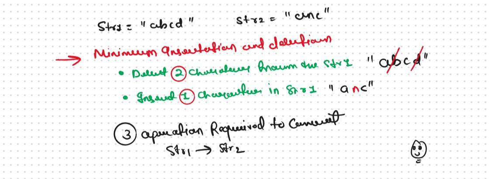
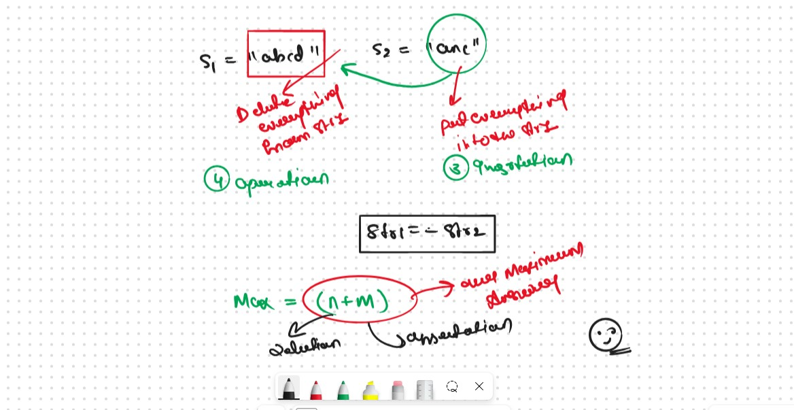
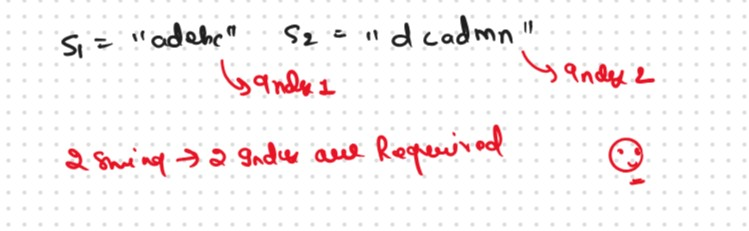
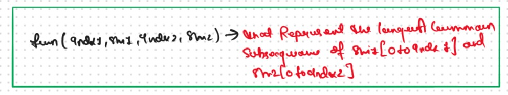
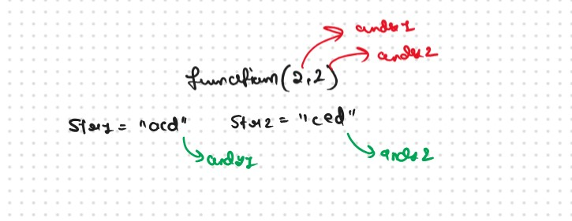
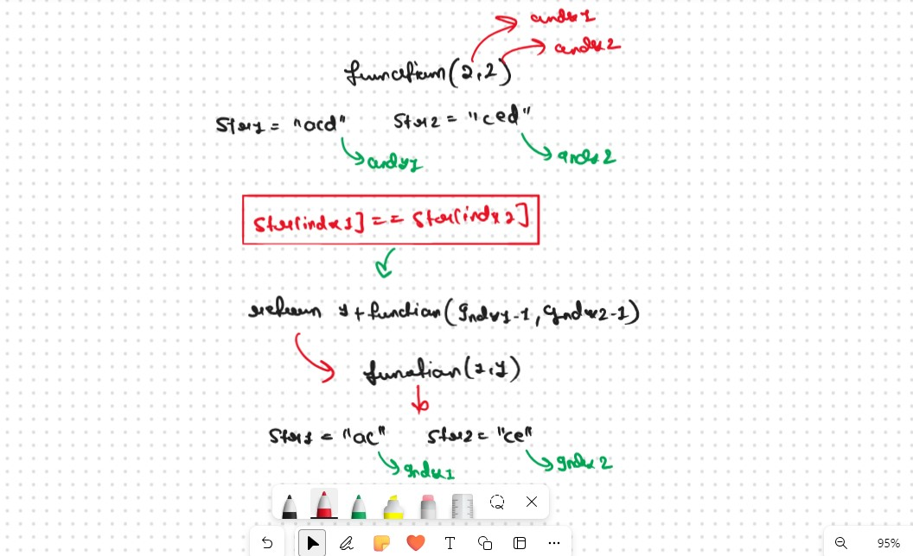
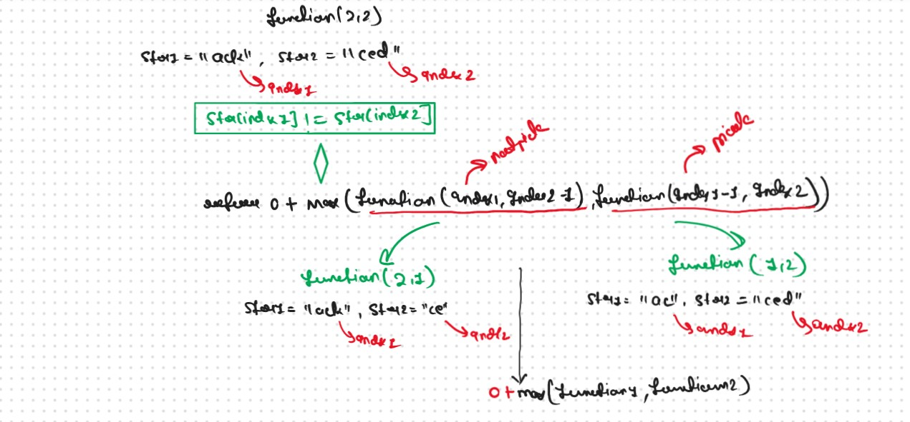
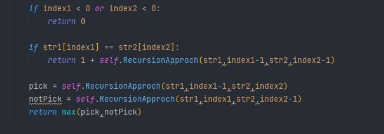
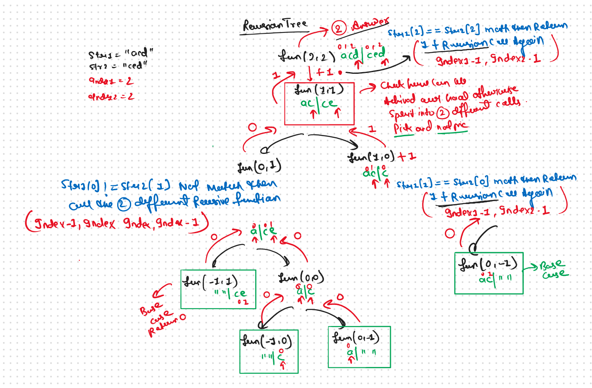
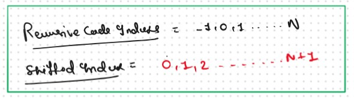

JB TAK FODEGA NHI .... TB TK CHODEGA NHI .... (MAANG)


DPL30 Minimum Insertions & Deletions to Convert String A to String B
Minimum Insertions or Deletions to Convert String A to String B We are given two strings, str1 and str2. We are allowed the following operations

Again this Question is the Replica of the DPL25 Just Try to Catch the Pattern
According to the BruteForce Approch The easiest way is to remove all the characters of str1 and then insert all the characters of str2. In this way, we will convert str1 to str2 with ‘n+m’ operations. (Here n and m are the length of strings str1 and str2 respectively)
The Question is Always to Convert Str1 to Str2, the Answer is "Yes"Remove the All the Character from the Str1 and Put all the Character of Str2 in Str1
In this Question, the Question is What Can i Not Touch?
Answer is longest common subsequence let's Talk About the Approch How Can we Related this Problem with the DPL25.
If We Observed very Carefuly then we need to longest Common Subsequence and remaining Operation on the Str1 and Str2 then we easily Say that
Minimum Operations Required Based on the ObserversationNow Remaining Entire 👇 Process will Be Same As Like in DPL25
In This Part we Discuss about DP on String and we form the
VVVV Imp Always Remember
For a string of length n, the number of subsequences will be 2^n.
if we want to generate of find all the possible Subsequences then we have 2 different Approch.
Algorithm / Intuition
If We Talk About the Brute Force Approch then, We are given two strings, S1, and S2 (suppose of same length n), the simplest approach will be to generate all the subsequences and store them, then manually find out the longest common subsequence.
This Approach will give us the correct answer but to generate all the subsequences, we will require exponential ( 2^n ) time. Therefore we will try some other approaches.
Now here we go with the Dynamic Programming and Recursion To generate all subsequences we will use recursion and in the recursive logic
Recursice Approch
Steps to form the Recursive SolutionStep 1: Express the problem in terms of indexes.

A single variable can’t express both the strings at the same time, so we will use two variables ind1 and ind2. They mean that we are considering string S1 from index 0 ind1 and string S2 from index 0 to S2. So our recursive function will look like this

Intuition for Recursive Logic



Step 3: Return the maximum of Pick and notPick

if S1[ind1] != S2[ind2]
The final pseudocode after steps 1, 2, and 3
Recursion Tree 
.png)
.png)
Sb Mai He Kru ...
Khud Bhi Kr le Khuch ..... Nalayk
Time & Space Complexity
Time Complexity: O(2^N)Reason: Exponential Time we find out the all the Possible Path
Space Complexity: O(N)
Reason: We are using a recursion stack space(O(N))
Memoization Approch
If we observe in the recursion tree, we will observe a many number of overlapping subproblems. Therefore the recursive solution can be memoized for to reduce the time complexity.
Steps to convert Recursive code to memoization solution:.png)
.png)
Sb Mai He Kru ...
Khud Bhi Kr le Khuch ..... Nalayk
Time & Space Complexity
Time Complexity:O(N*M)Reason: There are N*M states therefore at max ‘N*M’ new problems will be solved.
Space Complexity: O(N*M) + O(N+M)
Reason: We are using an auxiliary recursion stack space(O(N+M)) (see the recursive tree, in the worst case, we will go till N+M calls at a time) and a 2D array ( O(N*M)).
Tabulation Approch
Tabulation is a ‘bottom-up’ approach where we start from the base case and reach the final answer that we want and Memoization is the Top-down Approch.In Tabulation Approch We Just Creat a DP Array Same as Memoization and Simply Convert the Recurance Relation into the form of the Looping
Steps to convert Recursive Solution to Tabulation one.
.png)
.png)
Sb Mai He Kru ...
Khud Bhi Kr le Khuch ..... Nalayk
Time & Space Complexity
Time Complexity: O(N*M)Reason:There are 2 nested loops
Space Complexity: O(N*M)
Reason: We are using an external array of size ‘(N*M)’. Stack Space is eliminated.
Space Optimization
If we closelly Observed if any Tabulation Approch we used the Some Limited Stuff like: dp[ind1-1][ ], dp[ind][ ] for the finding the our ans then definetly here Spaced Optimization is Possible in that types of Problems. Always Remember
Golden Rule.png)
.png)
Sb Mai He Kru ...
Khud Bhi Kr le Khuch ..... Nalayk
Time & Space Complexity
Time Complexity: O(N*M)Reason: There are three 2 nested loops
Space Complexity: O(M)
Reason: We are using an external array of size ‘M+1’ to store only two rows.